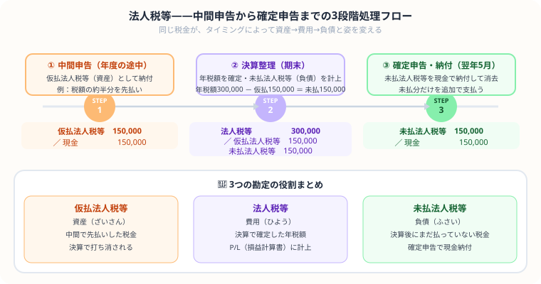

法人税等の仕訳を完全解説
中間申告・決算整理・確定申告の3ステップを例題で解説【日商簿記3級】
- 処理は3段階——中間申告（仮払）→決算整理（未払計上）→確定申告（差額を追加納付）
- 仮払法人税等は資産——中間に先払いした税金、確定申告時に精算する一時的な権利
- 未払法人税等＝年税額－中間納付額——決算で確定した残りの納付義務
- 「法人税等」＝法人税＋住民税＋事業税の3つをまとめた勘定科目名——1科目で3税をまとめて処理
こんにちは、大谷です！
実は、今回紹介する「法人税等」の3ステップ仕訳ですが、僕が初めて見たとき、「え、同じ税金のはずなのに、仮払法人税等→法人税等→未払法人税等ってタイミングごとに名前がコロコロ変わってる……！しかも『仮払』が資産扱いってどういうこと！？うわっ、なんじゃこりゃ！」と本気で脳内パニックを起こした論点でした（笑）。
落ち着いて整理すると、これは1つの税金が中間申告→決算→確定申告という3つの場面を通過するたびに衣装（勘定科目）を着替えていく【税金のタイムラインドラマ】なんです。中間で払いすぎた分は「まだ確定していない、返ってくるかもしれない権利」だから資産。決算で年税額が確定したら費用。残りはまだ払っていない義務だから負債——このストーリーの流れさえ掴めば、一瞬で仕訳が組み立てられます。
今回は、このタイムラインドラマをゲーム感覚で攻略する裏技を、図解と一緒にお届けします！
また、記事の末尾のほうにある【いいねボタン】をポチッと押してもらえると、めちゃくちゃ嬉しいです！
🔄 ① 法人税等の処理の流れ——中間申告・決算整理・確定申告の3段階

図解のタイムラインで全体像を確認してください。「仮払法人税等（資産）」→「法人税等（費用）」→「未払法人税等（負債）」の3つの勘定が登場します。中間で先払いした税金（仮払）が決算で確定した年税額（法人税等）の一部として吸収され、残りが未払として翌期に繰り越されます。
法人税等の処理は3つのステップで行います。
📝 ② 中間申告——仮払法人税等（資産）として先に納付する
中間申告では、税金を「仮払い」という形で先払いします。まだ年間税額が確定していないため、資産勘定「仮払法人税等」を使います。
仮払法人税等は「前払いした税金」なので資産です。決算時に取り崩します。
📊 ③ 決算時の仕訳——年税額を確定させて未払法人税等（負債）を計上する
決算で年間の法人税等が600,000円と確定した場合、中間申告で納付済みの300,000円を差し引いた残り300,000円が「未払法人税等」になります。
「法人税等」は費用勘定です。借方に計上することで当期の費用として認識されます。「未払法人税等」は負債（まだ払っていない税金）です。
損益計算書では「税引前当期純利益 − 法人税等 ＝ 当期純利益」の形で表示されます。法人税等は特別な費用として最後に差し引くイメージです。
💰 ④ 確定申告・納付時の仕訳——仮払と未払の両方を消して差額を追加納付
翌期に確定申告を行い、未払法人税等を実際に納付します。
未払法人税等（負債）を減らし、現金（資産）を減らします。これで法人税等に関する一連の処理が完了します。
⚠️ ⑤ よくある間違い——法人税等でミスしやすいパターンと対処法
誤：（借）法人税等60,000 ／（貸）現金60,000
正：（借）仮払法人税等60,000 ／（貸）現金60,000
中間申告の時点では年間税額がまだ確定していません。「仮払法人税等（資産）」で記録し、決算で確定した際に初めて「法人税等（費用）」を計上します。
年間税額が150,000円、中間納付60,000円の場合：
誤：（借）法人税等150,000 ／（貸）未払法人税等150,000（仮払を取り崩し忘れ）
正：（借）法人税等150,000 ／（貸）仮払法人税等60,000・未払法人税等90,000
中間で払った分（仮払法人税等）を必ず相殺することを忘れずに。
以下の一連の取引について仕訳しなさい。
- ① 中間申告：法人税等200,000円を現金で納付した
- ② 決算整理：当期の法人税等の年間税額は480,000円と確定した
- ③ 翌期：確定申告を行い、未払法人税等を現金で納付した
ポイント：②では仮払法人税等200,000円を取り崩し、残り280,000円を未払法人税等として計上します。
この記事が少しでも参考になったら……
法人税等は、1つの税金が資産→費用→負債と姿を変えていく「タイムラインドラマ」として流れで捉えれば、3ステップの仕訳は確実な得点源になります。
僕の執筆のモチベーション維持のために、この下にある【いいねボタン】をポチッと押してもらえると、めちゃくちゃ嬉しいです！
よくある質問
法人税等の処理は何段階あるの？
大きく3段階あります。①中間申告時（仮払法人税等を資産として計上）、②決算整理時（法人税等を費用計上し未払法人税等を負債計上）、③確定申告・納付時（未払法人税等を現金等で支払い消去）の順で処理します。この3ステップをセットで覚えましょう。
仮払法人税等はなぜ資産なの？
中間申告時点では年間の税額がまだ確定していないため、「前払い」という形で処理します。前払いした税金は後で費用として確定するまでの仮勘定なので資産（前払税金）に分類されます。決算で年間税額が確定して初めて「法人税等（費用）」として計上します。
未払法人税等はどう計算するの？
未払法人税等 ＝ 年間税額 − 中間申告で納付した仮払法人税等 で計算します。例えば年間税額が600,000円で中間納付が300,000円なら、未払法人税等は300,000円です。決算整理の仕訳は「（借）法人税等600,000 ／（貸）仮払法人税等300,000・未払法人税等300,000」となります。